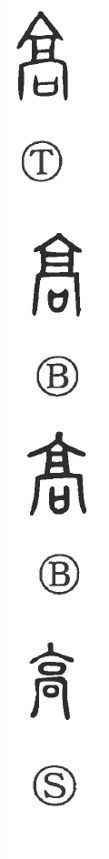

高

Kun: takai, taka, takamaru, takameru | On: kō
high, tall, lofty; exalted, superior; noble, pure
Explanation
The character 高 combines the form of 京, originally depicting the arched gateway of a fortress or capital with a watchtower above, and 口 (囗), the receptacle into which covenant writings were placed. In ritual practice, prayers and offerings were made at such fortress gates to guard against evil influences. Because the structure was tall and imposing, 高 came to mean “high, lofty, elevated,” and by extension “great, superior, excelling.” From this spatial sense of height it further developed meanings of rank and status, and in moral or spiritual usage it denotes nobility and purity of character, as in 高尚 (kōshō), “noble, lofty.